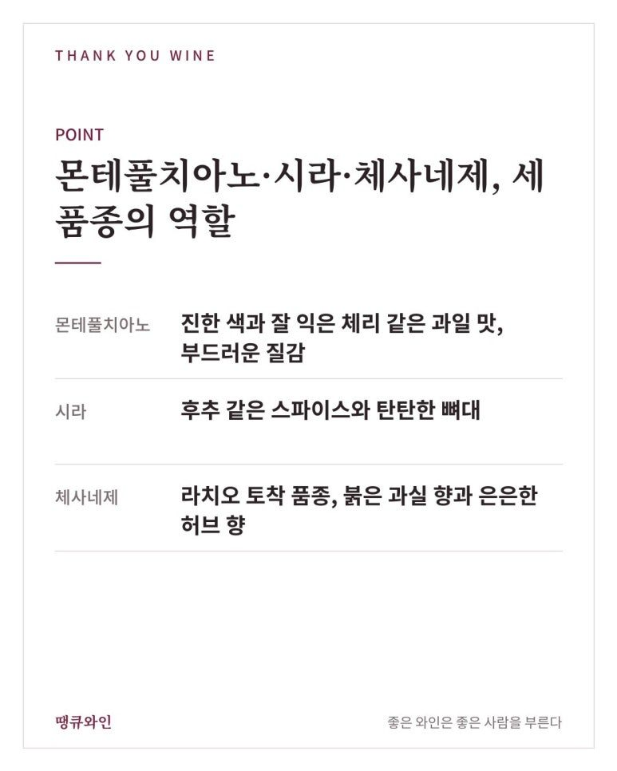
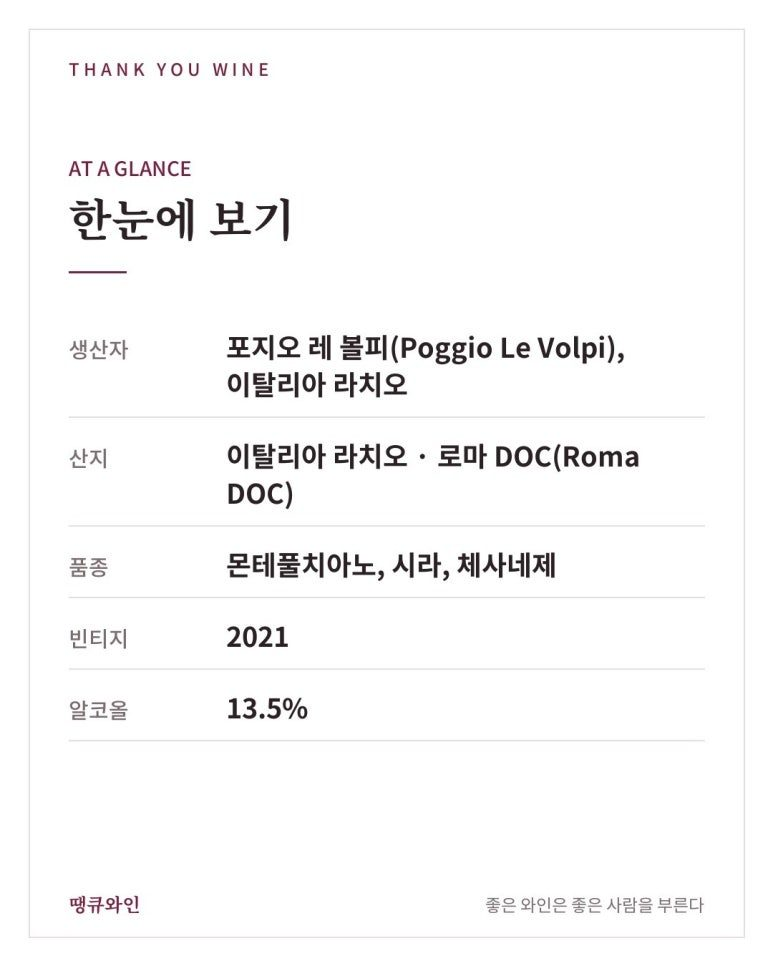
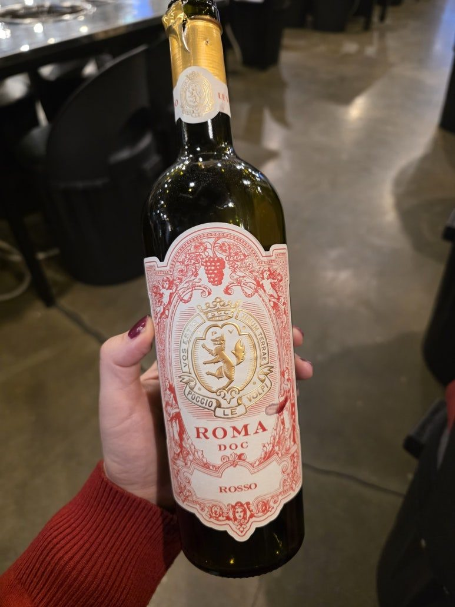
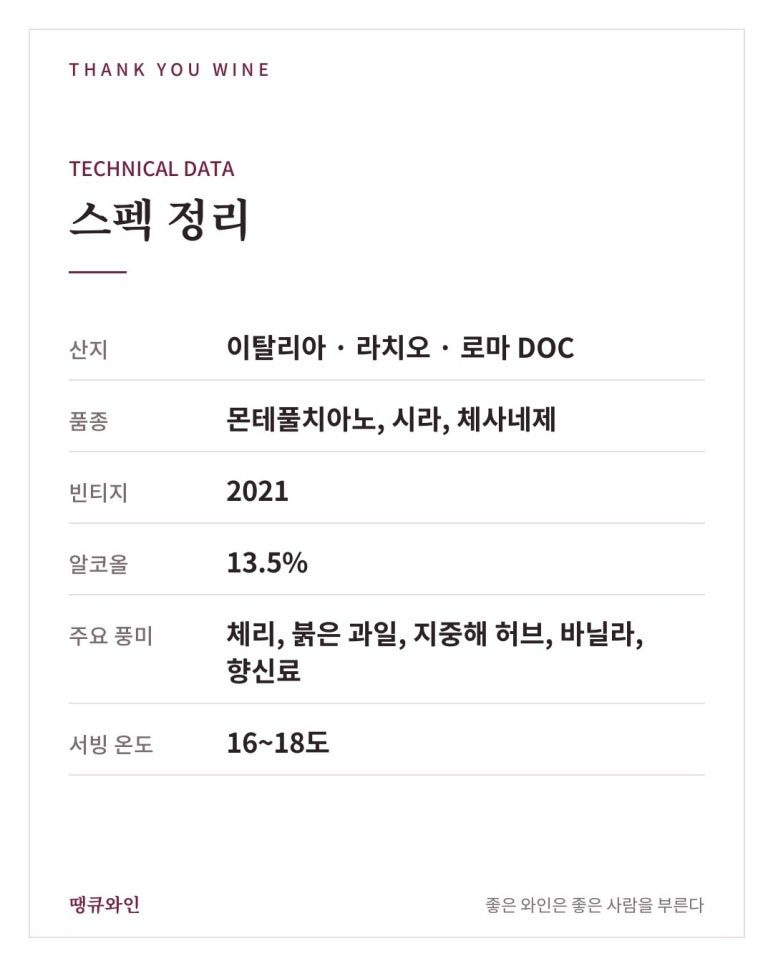
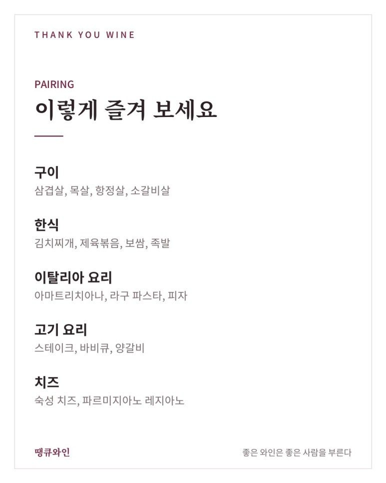
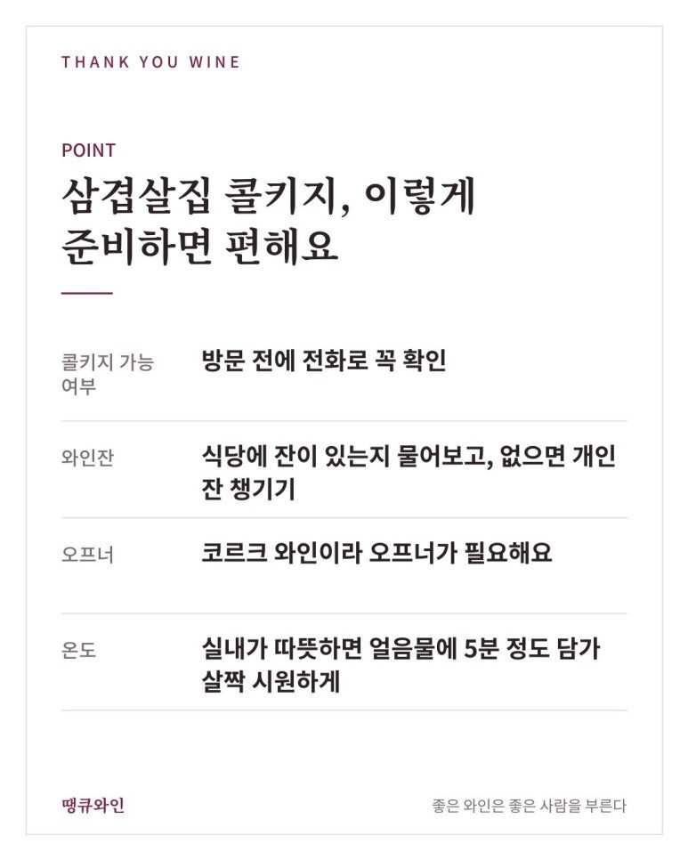
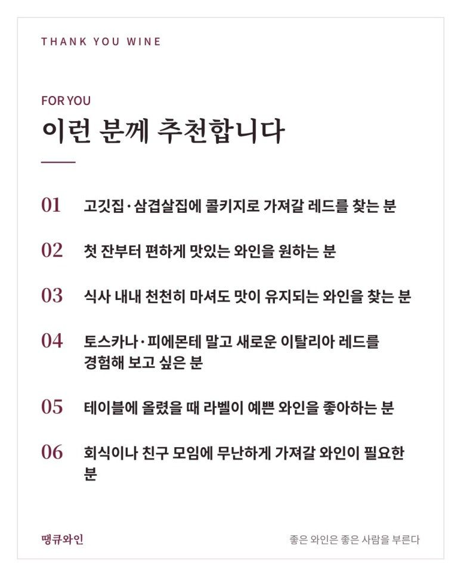
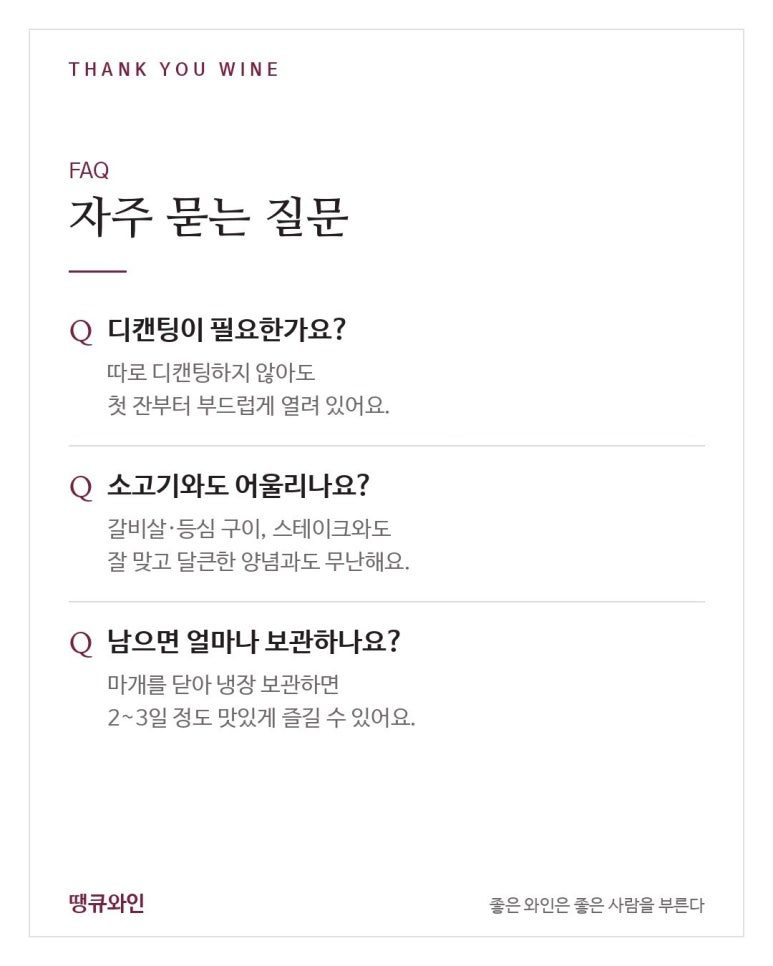

삼겹살 콜키지 와인 추천
포지오 레 볼피 로마 로쏘 2021
삼겹살 콜키지 와인 추천은 처음부터 무난하게 맛있고 + 끝까지 맛이 꺾이지 않고 + 고기 기름을 깔끔하게 정리해 주는 레드예요.
삼겹살집에 와인을 들고 가 본 적 있으신가요?
요즘은 고깃집에서도 콜키지를 받아 주는 곳이 많아져서, 소주 대신 레드 와인 한 병을 챙겨 가는 분들이 늘었습니다.
그런데 막상 고르려고 하면 고민이 됩니다.
너무 묵직하면 기름진 고기에 텁텁하게 느껴지고, 너무 가벼우면 쌈장·마늘·김치 맛에 와인이 묻혀 버리거든요.
오늘 소개할 포지오 레 볼피 로마 로쏘 2021(Poggio Le Volpi Roma DOC Rosso)은 바로 그 고민에 딱 맞는 와인입니다.
이탈리아 수도 로마 근교의 화산 토양에서 자란 몬테풀치아노·시라·체사네제로 만든 레드 와인이에요.
무엇보다 중요한 포인트는 바로,
처음부터 무난하게 맛있고 + 끝까지 맛이 꺾이지 않고 + 고기 기름을 깔끔하게 정리해 주는 레드라는 것.
한눈에 보는 포지오 레 볼피 로마 로쏘
- 생산자
- 포지오 레 볼피(Poggio Le Volpi), 이탈리아 라치오
- 산지
- 이탈리아 라치오 · 로마 DOC(Roma DOC)
- 품종
- 몬테풀치아노, 시라, 체사네제
- 빈티지
- 2021
- 알코올
- 13.5%
- 스타일
- 미디엄~풀바디 드라이 레드 와인
- 이런 분께
- 고깃집 콜키지 와인, 식사와 함께 편하게 마실 레드를 찾는 분
몬테풀치아노·시라·체사네제, 세 품종의 역할
로마 로쏘는 세 가지 포도를 섞어 만듭니다.
- 몬테풀치아노: 진한 색과 잘 익은 체리 같은 과일 맛, 부드러운 질감
- 시라: 후추 같은 스파이스와 탄탄한 뼈대
- 체사네제: 라치오 토착 품종, 붉은 과실 향과 은은한 허브 향

몬테풀치아노가 둥글고 편안한 맛을 깔아 주고, 시라가 고기와 잘 맞는 스파이스를 더하고, 체사네제가 ‘로마다운’ 개성을 보태는 구성이에요.
양조는 스테인리스 탱크에서 온도를 조절하며 발효한 뒤, 일부는 스테인리스에서, 일부는 크기가 다른 여러 나무통에서 숙성합니다.
그래서 오크 향이 과하게 튀지 않고, 과일 맛 뒤로 바닐라와 달콤한 향신료가 은은하게 깔리는 스타일입니다.

포지오 레 볼피 로마 로쏘 테이스팅 노트
잔에 따르면 진한 루비색이 돌고, 향에서는 잘 익은 체리, 붉은 과일, 지중해 허브, 바닐라와 달콤한 향신료가 차례로 올라옵니다.

▲ 직접 들고 간 포지오 레 볼피 로마 로쏘. 여우 문장이 들어간 빨간 라벨이 테이블에서 눈에 띕니다.
직접 마셔 보니 이 와인의 가장 큰 장점은 처음과 끝이 한결같다는 점이었어요.
병을 따자마자 첫 잔부터 무난하게 맛있습니다.
디캔팅을 해야 겨우 열리는 까다로운 와인이 아니라서, 식당에서 바로 따서 마시기 좋아요.
그리고 고기를 굽고 먹고 이야기하는 동안 시간이 지나도 맛이 너무 꺾이지 않습니다.
과일 맛이 금방 빠지거나 시큼해지지 않고, 마지막 잔까지 부드러운 질감과 은은한 향이 그대로 이어져요.
처음부터 무난하고, 끝까지 꺾이지 않는 와인
고기를 구우며 두세 시간 천천히 마시는 자리에 이만한 장점이 없습니다.
POGGIO LE VOLPI ROMA ROSSO
- 산지: 이탈리아 · 라치오 · 로마 DOC
- 품종: 몬테풀치아노, 시라, 체사네제
- 빈티지: 2021
- 알코올: 13.5%
- 주요 풍미: 체리, 붉은 과일, 지중해 허브, 바닐라, 향신료
- 서빙 온도: 16~18도

포지오 레 볼피 로마 로쏘와 어울리는 음식은?
이 와인을 마시며 가장 먼저 떠오른 자리는 삼겹살집이었습니다.
둥근 과일 맛이 고기의 고소함을 받쳐 주고, 적당한 산미와 탄닌이 기름진 맛을 깔끔하게 씻어 줍니다.
시라의 스파이스는 후추·마늘·쌈장 같은 양념과도 잘 어울려요.
- 구이: 삼겹살, 목살, 항정살, 소갈비살
- 한식: 김치찌개, 제육볶음, 보쌈, 족발
- 이탈리아 요리: 아마트리치아나, 라구 파스타, 피자
- 고기 요리: 스테이크, 바비큐, 양갈비
- 치즈: 숙성 치즈, 파르미지아노 레지아노
특히 두툼하게 구운 삼겹살에 구운 김치와 마늘을 곁들여 보세요.
고기 한 점, 와인 한 모금이 번갈아 가도 입안이 무거워지지 않고, 다음 한 점이 또 생각나는 조합입니다.
로마의 대표 파스타인 아마트리치아나도 돼지고기(관찰레)로 맛을 내는 요리라, 로마 와인과 돼지고기가 잘 맞는 건 어쩌면 당연한 일이에요.

삼겹살집 콜키지, 이렇게 준비하면 편해요
와인을 고깃집에 가져갈 때 미리 챙기면 좋은 것들을 정리해 봤습니다.
- 콜키지 가능 여부: 방문 전에 전화로 꼭 확인
- 와인잔: 식당에 잔이 있는지 물어보고, 없으면 개인 잔 챙기기
- 오프너: 코르크 와인이라 오프너가 필요해요
- 온도: 실내가 따뜻하면 얼음물에 5분 정도 담가 살짝 시원하게
- 병 수: 4명 기준 1~2병이면 넉넉

로마 로쏘는 첫 잔부터 맛이 열려 있어서, 디캔터 없이 식당에서 바로 따서 마셔도 충분합니다.
라벨도 화려해서 테이블에 올려 두면 “이 와인 뭐예요?” 하고 대화가 자연스럽게 시작돼요.
포지오 레 볼피 로마 로쏘, 이런 분께 추천합니다
- 고깃집·삼겹살집에 콜키지로 가져갈 레드를 찾는 분
- 첫 잔부터 편하게 맛있는 와인을 원하는 분
- 식사 내내 천천히 마셔도 맛이 유지되는 와인을 찾는 분
- 토스카나·피에몬테 말고 새로운 이탈리아 레드를 경험해 보고 싶은 분
- 테이블에 올렸을 때 라벨이 예쁜 와인을 좋아하는 분
- 회식이나 친구 모임에 무난하게 가져갈 와인이 필요한 분

와인을 잘 아는 분과 처음 마시는 분이 한자리에 있어도, 누구 하나 부담스럽지 않은 맛이라는 점이 이 와인의 진짜 장점입니다.

자주 묻는 질문
Q. 디캔팅이 필요한가요?
A. 따로 디캔팅하지 않아도 첫 잔부터 부드럽게 열려 있습니다. 식당에서 바로 따서 드셔도 충분해요.
Q. 삼겹살 말고 소고기와도 어울리나요?
A. 네, 갈비살·등심 같은 구이나 스테이크와도 잘 맞습니다. 양념 갈비나 불고기처럼 달큰한 양념과도 무난해요.
Q. 남으면 얼마나 보관할 수 있나요?
A. 마개를 닫아 서늘한 곳이나 냉장고에 두면 2~3일 정도 맛있게 즐길 수 있습니다.
결국 로마 로쏘의 매력은 ‘처음과 끝이 같은 맛’입니다
포지오 레 볼피 로마 로쏘는 1920년부터 포도를 길러 온 메르제 가문이, 로마 근교 화산 토양에서 몬테풀치아노·시라·체사네제로 만든 레드 와인입니다. 첫 잔부터 무난하게 맛있고, 고기를 굽고 이야기하는 동안에도 끝까지 꺾이지 않는 맛. 그래서 저는 이 와인을
“삼겹살집에 들고 가기 가장 마음 편한 레드”
라고 소개하고 싶습니다.
이번 주말 고깃집 약속이 있다면, 소주 대신 로마 로쏘 한 병 챙겨 가 보세요.
이 글은 땡큐와인 네이버 블로그에 먼저 올린 글이에요.